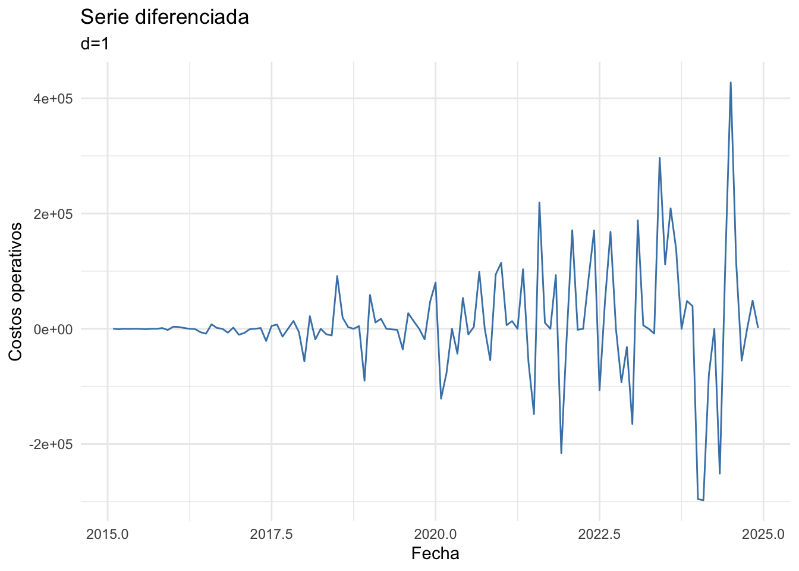

Code
library(tidyverse)
library(forecast)
library(tseries)
library(lubridate)
library(patchwork)
library(knitr)
library(TSstudio)library(tidyverse)
library(forecast)
library(tseries)
library(lubridate)
library(patchwork)
library(knitr)
library(TSstudio)Una empresa desea analizar el costo operativo mensual de las sucursales en la CDMX, para ello se tienen registro de los costos desde Enero del 2015 hasta Diciembre del 2024. En principio no hay un objetivo claro para el proyecto, sin embargo un enfoque equilibrado es que la modelación realizada logre describir y tratar de explicar el fenómeno, además de presentar proyecciones para meses posteriores.
Por facilidad del ejemplo, asumiremos que no hay valores faltantes, la información es confiable y se tiene un preprocesamiento correcto. En general, siempre habrá que confirmar esto cuando se trabaje con datos reales. El tratamiento de una serie de tiempo con valores faltantes es un problema para el que aún nos faltan herramientas.
set.seed(2028)
n <- 120
idx <- 1:n
fecha <- seq(as.Date("2015-01-01"), by = "month", length.out = n)
tendencia_real <- 50 - 1.3 * idx^2
estacionalidad_real <- 3 * sin(2 * pi * (idx - 10) / 12)
ruido <- rnorm(n, mean = 0, sd = 5)
accidentes <- tendencia_real * estacionalidad_real * ruido
# para manejar con tidy
serie_df <- tibble(idx = idx, fecha = fecha, accidentes = cumsum(accidentes) + 200000)
# objeto time series para funciones especificas, aqui asignamos el periodo estacional
accidentes_ts <- ts(serie_df$accidentes, start = c(2015, 1), frequency = 12)Una exploración y descripción inteligente de los datos puede facilitar etapas posteriores (identificación de parámetros y proponer modelos). Puede ser complicado encontrar la gráfica/técnica que muestre hallazgos relevantes, es una buena práctica solamente presentar los hallazgos más importantes (para la toma de decisiones del negocio o para justificar deciciones dentro de la modelación), y se deben de acompañar de una interpretación dentro del contexto del problema, en este caso, dentro del contexto de la empresa.
Cuando se tiene suficiente conocimiento del contexto del problema, también es posible encontrar correlación entre eventos económicos, políticos o sociales y características de la serie. Por ejemplo, el mes en el que empezó la pandemia del COVID también comenzó una tendencia decreciente en las ventas de un comercio, etc.
Aunque en lo que resta del ejemplo omitiremos las interpretaciones de este tipo, es muy importante incluirlas dentro de un análisis.
Al visualizar la serie se puede observar una tendencia creciente, así como una varianza no constante, y esto puede ser un indicio de un modelo multiplicativo.
ggplot(serie_df, aes(fecha, accidentes)) +
geom_line(color = "steelblue") +
labs(x = "Fecha", y = "Número de accidentes",
title = "Costo operativo mensual",
subtitle = "Tendencia y varianza no constante") +
theme_minimal()
En esta etapa (de un primer acercamiento a los datos) nos interesa visualizar patrones que puedan ser relevantes, en el caso de una serie de tiempo es de particular interés encontrar tendencia regular, patrones estacionales, tendencia estacional, varianza no constante, entre otros aspectos.
Si también se tuviera acceso a covariables, se pueden utilizar técnicas de análisis multivariado que permitan una descripción conjunta de los datos.
ts_seasonal(accidentes_ts, type = "box",title = "Comportamiento de la serie por mes")Distribución de cada mes
ts_seasonal(accidentes_ts, type = "cycle",title = "Comportamiento de la serie por mes")Distribución de cada mes
ts_seasonal(accidentes_ts, type = "normal",title = "Comportamiento de la serie por mes")Distribución de cada mes
summary(serie_df$accidentes) Min. 1st Qu. Median Mean 3rd Qu. Max.
74656 188629 205334 459217 659017 1663799 #auto.arima(accidentes_ts)
# Series: accidentes_ts
#ARIMA(2,1,2)(0,0,1)[12]
#Coefficients:
# ar1 ar2 ma1 ma2 sma1
# -1.4496 -0.7382 1.7002 0.9138 0.3955
# s.e. 0.1095 0.1025 0.0744 0.0806 0.0982
#sigma^2 = 7.26e+09: log likelihood = -1518.6
# AIC=3049.19 AICc=3049.94 BIC=3065.87En esta etapa buscamos estimar los componentes de la serie bajo un modelo aditivo o multiplicativo, para posteriormente describir cada uno en términos del contexto del problema.
Como se discutió antes, la presencia de tendencia y varianza no constante, puede ser indicio de un modelo aditivo que requiere diferenciación o de un modelo multiplicativo. Cuando ambas estimaciones son similares, tal vez el componente estacional no es dominante dentro de la serie.
descomp <- decompose(accidentes_ts, type = "additive")
autoplot(descomp) +
labs(title = "Descomposición aditiva") +
theme_minimal()
descompMult <- decompose(accidentes_ts, type = "multiplicative")
autoplot(descompMult) +
labs(title = "Descomposición multiplicativa") +
theme_minimal()
Tendencia (\(m_t\)):
Estacionalidad (\(s_t\)):
Residuo (\(Y_t\)):
Luego de una descripción de los datos, el paso sugerido es explorar transformaciones a los datos y analizar las funciones de autocorrelación muestral, con el objetivo de identificar patrones asociados a modelos ARIMA, ARMA estacional puro o SARIMA.
Como la ACF decrece lento, es un indicio de que será necesario realizar una diferenciación regular. Por el otro lado, la PACF parece mostrar un patrón estacional (forma de campana repetida), sin embargo no es significativo. Esto no quiere decir que no será necesario incluir un componente que modele la parte estacional, solamente aún no tenemos suficiente evidencia.
ggAcf(accidentes_ts, lag.max = 36) + labs(title = "ACF - serie original") +
ggPacf(accidentes_ts, lag.max = 36) + labs(title = "PACF - serie original")
Es posible encontrar un valor óptimo de \(\lambda\) para aplicar una transformación Box-Cox con la función BoxCox.lambda() de la paquetería forecast. En este caso, un \(\lambda\) cercano a cero sugiere el uso de la transformación logaritmo. Esto puede rreglar de forma aparante algunos problemas de supuestos o estacionaridad sin embargo causará problemas al hacer predicciones (pues las predicciones estarán en escala logarítmica y habrá que “exponenciar” los resultados).
lambda_opt <- BoxCox.lambda(accidentes_ts, method = "loglik")
lambda_opt[1] -0.1Hay funciones en R que encuentran el valor de \(d\) y \(D\) óptimo, en nuestro ejemplo, se recomienda no aplicar diferenciación estacional y solo una diferenciación regular.
D_sugerido <- nsdiffs(accidentes_ts)
D_sugerido[1] 0d_sugerido <- ndiffs(accidentes_ts)
d_sugerido[1] 1serie_diferenciada <- diff(accidentes_ts)Luego de realizar una diferenciación regular, la serie aún mantiene una comportamiento heterocedastico, esto sugiere un componente multiplicativo. Además de que esto cambia la interpretación del modelo.
# para no tener problemas con los indices de tiempo
serie_diferenciada_df <- data.frame(
fecha = time(serie_diferenciada),
accidentes = as.numeric(serie_diferenciada)
)
ggplot(serie_diferenciada_df, aes(fecha, accidentes)) +
geom_line(color = "steelblue") +
labs(
x = "Fecha",
y = "Costos operativos",
title = "Serie diferenciada",
subtitle = "d=1"
) +
theme_minimal()
Parece que los patrones de las funciones de autocorrelación no son claros.
ggAcf(serie_diferenciada, lag.max = 36) + labs(title = "ACF serie diferenciada") +
ggPacf(serie_diferenciada, lag.max = 36) + labs(title = "PACF serie diferenciada")
Realizar las transformaciones sobre la serie original unicamente es para la identificación, cuando se ajuste un modelo debe ser sobre la serie original, indicando las diferenciaciones o transformaciones como parámetros.
Como los patrones de la ACF y PACF de la serie diferenciada no son claros, no es sencillo identificar a simple vista los órdenes \(p\), \(q\), \(P\) y \(Q\). En este caso es razonable apoyarse en la búsqueda automática y complementarla con modelos que permitan responder preguntas concretas:
auto.arima().auto.arima() con búsqueda exhaustiva (sin stepwise ni aproximaciones), para verificar que la búsqueda por defecto no se quedó en un óptimo local.No se aplica la transformación Box-Cox en los candidatos, pues los criterios de información de modelos con y sin transformación no son comparables entre sí, además de que las predicciones tendrían que regresarse a la escala original y suelen ser malas. La heterocedasticidad se revisará con los residuos en la etapa de diagnóstico.
espec <- list(
"M1: ARIMA(2,1,2)(0,0,1)[12]" = list(order = c(2,1,2), seasonal = c(0,0,1)),
"M2: ARIMA(2,1,2)" = list(order = c(2,1,2), seasonal = c(0,0,0)),
"M3: ARIMA(1,1,1)(0,0,1)[12]" = list(order = c(1,1,1), seasonal = c(0,0,1)))
ajustes <- map(espec, ~ Arima(accidentes_ts, order = .x$order, seasonal = .x$seasonal))
mod_auto_exh <- auto.arima(accidentes_ts, stepwise = FALSE, approximation = FALSE)
mod_auto_exhSeries: accidentes_ts
ARIMA(2,1,2)(0,0,1)[12]
Coefficients:
ar1 ar2 ma1 ma2 sma1
-1.4496 -0.7382 1.7002 0.9138 0.3955
s.e. 0.1095 0.1025 0.0744 0.0806 0.0982
sigma^2 = 7.26e+09: log likelihood = -1518.6
AIC=3049.19 AICc=3049.94 BIC=3065.87ajustes[["M4: auto.arima exhaustivo"]] <- mod_auto_exhLos criterios de información (AIC, AICc y BIC) penalizan la verosimilitud por el número de parámetros, el BIC penaliza más fuerte y tiende a elegir modelos más parsimoniosos. Las métricas de error calculadas sobre los mismos datos con los que se ajustó el modelo (RMSE y MAE) miden el poder predictivo aparente, que siempre es optimista. El poder predictivo real se evalúa con datos que el modelo no vio (nuevas observaciones)
Es importante recordar que los criterios de información solo son comparables entre modelos con el mismo orden de diferenciación (\(d\) y \(D\)), pues en caso contrario la verosimilitud se calcula sobre series distintas.
comparacion <- imap_dfr(ajustes, ~ {
a <- accuracy(.x)
tibble(
modelo = .y,
d = .x$arma[6],
D = .x$arma[7],
logLik = as.numeric(logLik(.x)),
AIC = .x$aic,
AICc = .x$aicc,
BIC = .x$bic,
RMSE = as.numeric(a[, "RMSE"]),
MAE = as.numeric(a[, "MAE"])
)
}) |> arrange(D, AICc)
kable(comparacion, digits = 1, caption = "Comparación de modelos candidatos (ajuste aparente)")| modelo | d | D | logLik | AIC | AICc | BIC | RMSE | MAE |
|---|---|---|---|---|---|---|---|---|
| M1: ARIMA(2,1,2)(0,0,1)[12] | 1 | 0 | -1518.6 | 3049.2 | 3049.9 | 3065.9 | 83046.9 | 51779.7 |
| M4: auto.arima exhaustivo | 1 | 0 | -1518.6 | 3049.2 | 3049.9 | 3065.9 | 83046.9 | 51779.7 |
| M3: ARIMA(1,1,1)(0,0,1)[12] | 1 | 0 | -1523.0 | 3054.0 | 3054.3 | 3065.1 | 86596.3 | 50439.8 |
| M2: ARIMA(2,1,2) | 1 | 0 | -1525.1 | 3060.1 | 3060.7 | 3074.0 | 88584.0 | 52948.8 |
mod_final <- ajustes[["M1: ARIMA(2,1,2)(0,0,1)[12]"]]
mod_finalSeries: accidentes_ts
ARIMA(2,1,2)(0,0,1)[12]
Coefficients:
ar1 ar2 ma1 ma2 sma1
-1.4496 -0.7382 1.7002 0.9138 0.3955
s.e. 0.1095 0.1025 0.0744 0.0806 0.0982
sigma^2 = 7.26e+09: log likelihood = -1518.6
AIC=3049.19 AICc=3049.94 BIC=3065.87checkresiduals(mod_final)
Ljung-Box test
data: Residuals from ARIMA(2,1,2)(0,0,1)[12]
Q* = 32.563, df = 19, p-value = 0.02698
Model df: 5. Total lags used: 24
pronostico_final <- forecast(mod_final, h = 12)
autoplot(pronostico_final) +
labs(x = "Fecha", y = "Costo operativo",
title = "Pronóstico a 12 meses") +
theme_minimal()